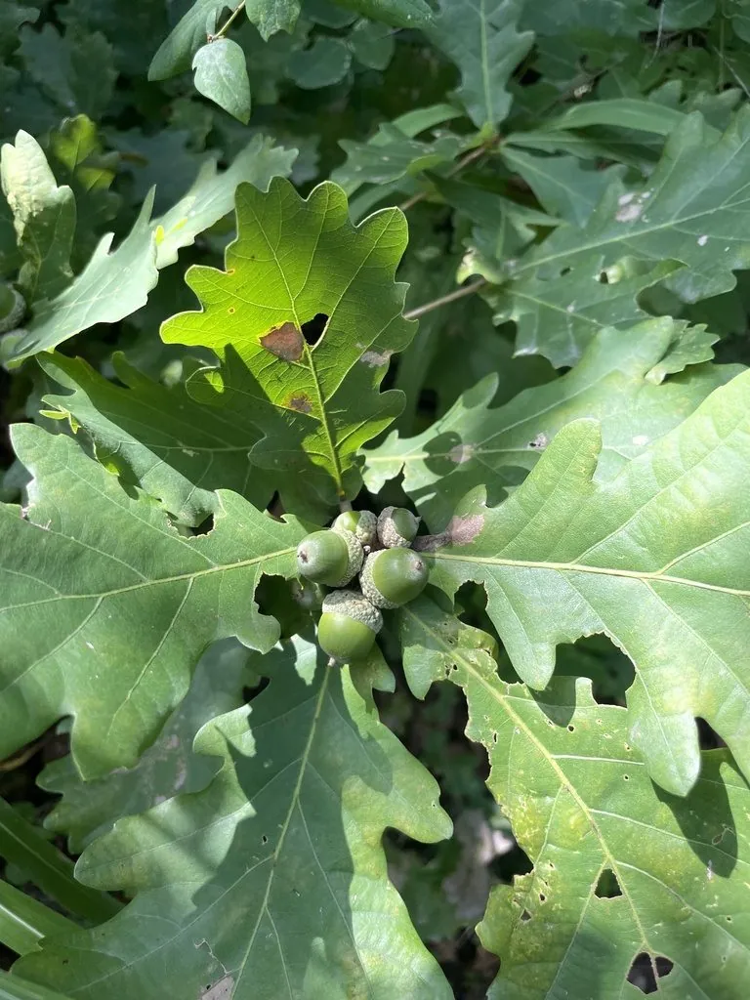

乔木 · 植物界
辽东栎 Quercus wutaishanica

中国华北与西北山地的落叶乔木，耐旱耐寒，橡实可食，是北方山地水土保持与用材的重要乡土树种。
- 分类
- 门被子植物门纲木兰纲目壳斗目科壳斗科属栎属
- 栖息环境
- 海拔 1500 米以下的山地、丘陵，喜光耐寒耐旱
- 地理分布
- 中国华北、西北及东北南部山地
- 保护级别
- 暂无评估；中国未列入国家重点保护野生植物名录
物种志
辽东栎为落叶乔木，高可达 15 m，树皮暗灰褐色、纵裂；叶片倒卵形至椭圆形，边缘具波状圆齿，叶柄短。雌雄同株，雄花序下垂，雌花单生或簇生；壳斗杯形，苞片覆瓦状排列，坚果卵圆形，成熟时褐色。
辽东栎分布于中国华北、西北及东北南部的山地，是北方温带落叶阔叶林的主要树种之一，喜光、耐寒、耐旱，适应性强，能在瘠薄山地生长。木材坚硬，可供建筑、农具与薪炭用；橡实含淀粉，可食或酿酒、作饲料；树皮与壳斗可提取栲胶。辽东栎根系发达，是北方山地水土保持与荒山造林的优良树种，也是多种野生动物的食物来源。
形态与习性
- 株高可达 15 m，树皮纵裂
- 花期4–5 月，雄花序下垂
- 果期9–10 月，坚果卵圆形
- 光照喜光，不耐长期荫蔽
- 水分耐旱，怕积水
- 主要用途建筑与农具用材、橡实淀粉、水土保持
趣味知识
- 辽东栎耐旱耐寒，能在北方瘠薄山地生长，是荒山造林的优良树种。
- 辽东栎的橡实含淀粉，可食或酿酒，也是野生动物的重要食物。
- 辽东栎与蒙古栎外形相似，但辽东栎叶片较小、树形较矮。